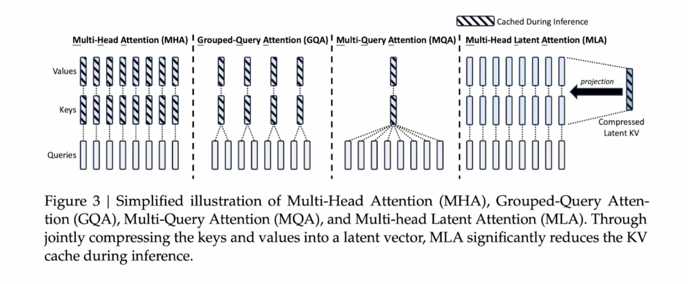

DeepSeek-v3 技术报告¶
kv cache¶
现在大模型基本是decoder结构，是自回归模型。它是一个token一个token生成，并且每次大模型的输入是之前所有的输出， 所以每次都要计算之前所有的token的attention。为了避免重复计算，使用了kv cache。基本思路是用空间换时间
kv cache缓存的是k和v经过\(w_k,w_v\)矩阵计算后的结果，attention计算时会复用这个结果
不过kv cache占用大量空间，MLA的思路就是减小kv
MLA¶
MLA的kv cachae¶
Attention就是通过矩阵相乘的形式计算token之间的关系，MLA就是在这个基础上进行改进的。
同一个头\(h_t\)(\(h_t\)按照列来concatenate,目的是捕捉同一个token的不同特征)，经过模型训练过的\(W^Q,W^K,W^V\) 转换成为\(q_t,k_t,v_t\)进行attention计算

多头注意力机制将\(q,k,v\)扩展为三维
这里\(n_h\)是总头数
传统的多头注意力机制，需要将所有的k和v cache起来
GQA的思路是，将k和v数量减少，比如两个q共用一个k和v
MQA的思路是一个k,v就可以把所有的q都计算出来了
MLA的思路是将k和v进行压缩，压缩到更小的空间，称为latent kv，我们在cache时，只需要cache latent kv就可以了。 latent kv是通过一个线性变换得到的，latent kv的维度比k和v小很多
我们要引入中间变量\(c_t^{KV}=W^{DKV}h_t\),这里的\(W^{DKV}\)是一个线性变换矩阵，\(c_t^{KV}\)的维度比\(k_t\)和\(v_t\)小很多，我们要cache c
在模型做inference时候，不需要单独算\(W^{UK}和W^{UV}\)，它们会融入到一个参数矩阵里
我们就只需要训练W'就行了
同样对k和v，我们在训练时也不需要计算\(k^c和v^c\),只需要计算c就行了
作者又对q进行了压缩，q的维度也比k和v小很多
注意：这里压缩q的中间变量c跟kv的c不一样
MLA的位置编码¶
如果同一个token在不同位置，corelation就会不一样，位置编码的作用是帮助模型理解token之间的相对位置关系
传统的位置编码包括absolute position embedding和relative position embedding
absolute position embedding是对每个token进行位置编码，relative position embedding是对每个token之间的相对位置进行编码
绝对值位置编码¶
比较简单，但是inference的时候，长句子的效果不好
相对位置编码¶
长序列处理能力较强，计算复杂度较高，计算量大，泛化性好
RoPE=绝对位置编码+相对位置编码¶
MLA的思路是对每个token进行位置编码，使用的是相对位置编码，有效地解决